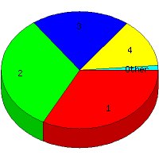

Week of 8/16/2009 to 8/22/2009: Top
5 of
5 File Types (Extensions)
Sorted by Access Count
Individual file types as determined by file extensions. All URLs that
do not contain an extension are counted as directories.

| Rank |
Type |
Accesses |
% |
Bytes |
% |
| 1 |
jpg
|
52 |
32.91 |
2,201,814 |
78.65 |
| 2 |
htm
|
51 |
32.28 |
182,896 |
6.53 |
| 3 |
Directory (folder)
|
32 |
20.25 |
81,375 |
2.91 |
| 4 |
gif
|
21 |
13.29 |
332,808 |
11.89 |
| 5 |
css
|
2 |
1.27 |
520 |
0.02 |